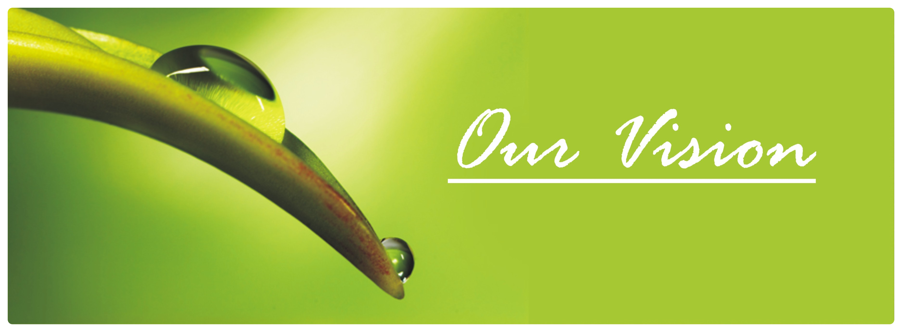

Our vision is to train youngster who can inspire other to strive and enable them to accomplish great things. Ideal Eyes an ngo come into existence in 2001 under the visionary leadership of its Honourable President And Menter Mr. Pankaj Kumar. Since its very inception, the organiation is sincerly dedicated toward its nobale aim of upliftment of the downtrodden by providing education, basic infrastructer leading to their sustainable social broad frame work. Md.Shakeel Akhtar,the Founder and the hon'ble secretary is responsible for the smooth governance and day-to-day Functioning of the esteemed organization. Ideal Eyes has very noble objectives,to which it strictly adherse to: To commit to quality education. To bring about social and cultural upliftment of weaker section of the society of the Especially Women through various Development polices and Programmes. To increase General Awarenness Among Its Subjects By Disseminating Information Through Electronic Networking.